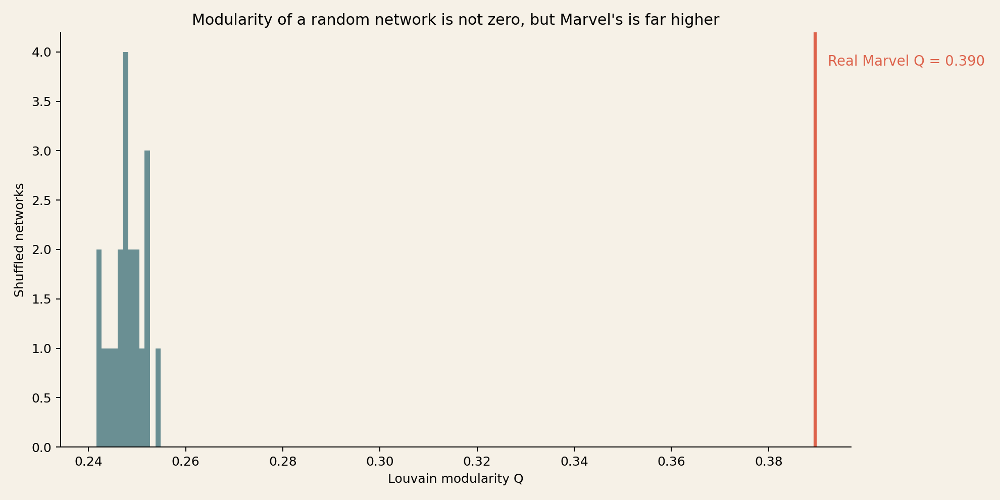
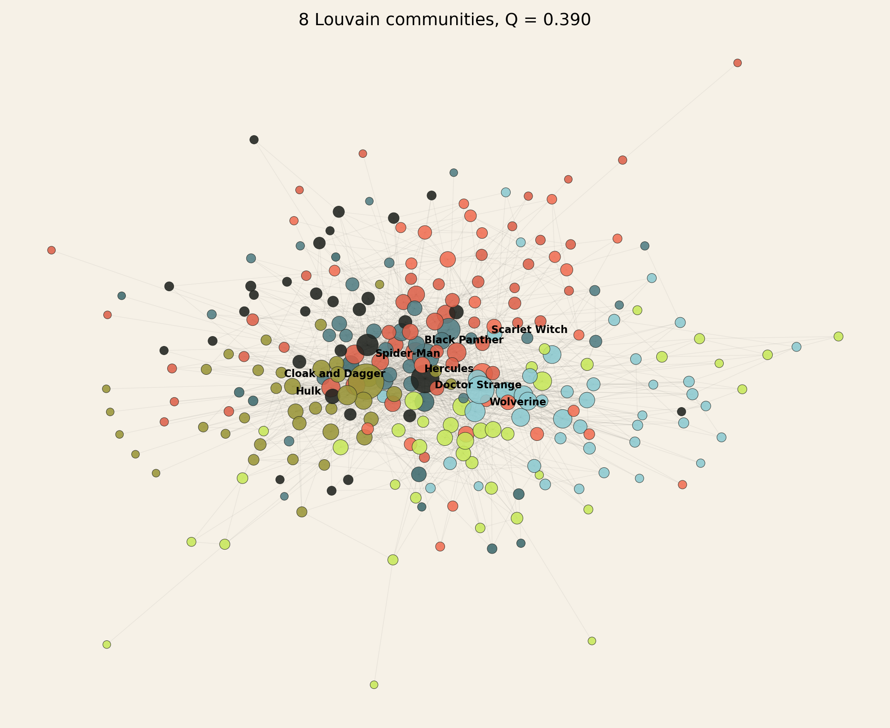
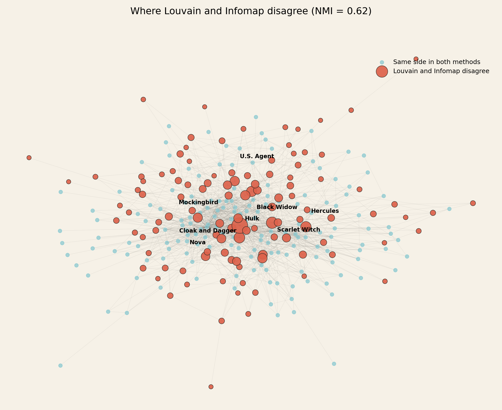

Go nuts opener 1 · Louvain vs Infomap
Two methods,
one network,
different maps.
We ask Louvain and Infomap the same question — what are Marvel's communities? — on the same 277-character giant component. Both agree the network is far more grouped than chance. They agree with each other far less than that.
01 · The question
Is Marvel
made of groups?
Weeks 2 and 3 asked what a single node or a single link can tell us. This week zooms out: are there groups of characters that hang together — the way X-Men, Avengers or Spider-people cluster on Wikipedia?
Modularity Q scores a proposed partition: the fraction of links that fall inside groups, minus what a degree-preserving null would expect by chance.
Q = (1/2m) sum_ij (A_ij - k_i k_j / 2m) delta(c_i, c_j)
Following the Week 4 prompt, we ask the sharper question: if we hand the same network to two different community-detection algorithms, how much do they agree, and where do they disagree?
02 · The two methods
Move nodes,
or compress a walk.
Louvain starts with every character alone, repeatedly moves one character into a neighboring community whenever that raises Q, then collapses each community into a super-node and repeats. It is greedy and fast, and the order characters are visited in (set by a random seed) changes the answer.
Infomap asks a different question entirely: if a random walker wandered the network, what grouping of characters gives the shortest two-level description of its path? It optimizes a map equation, not modularity, and handles the walk-structure of the network natively.
We use the same undirected giant component as Weeks 2 and 3: 277 characters, 1,421 links. The canonical Louvain run uses seed 280504 (this project's running seed, one more than Week 3's). Infomap uses its default two-level search.
02A · Explore the answer
Same layout.
Two colorings.
The node positions are fixed (one force layout of the real network). Switch between Louvain's 8 communities and Infomap's 17 modules to see the same characters regrouped. A coral ring marks a character the two methods place on different sides of a boundary.
Loading the graph data...
03 · Compared to what
Random networks
aren't zero either.
Section 4's biggest warning: a random network's modularity is not zero, because with enough links an optimizer always finds some way to draw borders that cross fewer links than expected. We took the real 277-node, 1,421-link graph, ran 20 degree-preserving double-edge swaps (as in Week 2 and Week 3), and re-ran Louvain on each shuffle.

| Network | Runs | Mean Q | Standard deviation | z-score |
|---|---|---|---|---|
| Real Marvel (Louvain) | 1 | 0.390 | — | — |
| Degree-preserving shuffles | 20 | 0.248 | 0.0035 | +39.99 |
The real network's modularity is about 40 shuffle standard deviations above the null mean. This is the same lesson as Week 2's clustering test and Week 3's betweenness test, applied to a new statistic: Marvel's grouping is not an artifact of its degree sequence alone. But — as the course material stresses — a random network with the same size and density still reaches Q ≈ 0.25, nowhere near zero. Report modularity against its null, never on its own.
04 · How stable is one run
Same algorithm,
ten different answers.
We reran Louvain with 10 different seeds. Every run found 7, 8 or 9 communities, with modularity between 0.371 and 0.386 — a tight range. But the partitions themselves move more than the score suggests: pairwise normalized mutual information (NMI) between the 10 runs ranges from 0.53 to 0.89, averaging 0.70.
That is the exact pattern the course material predicts for the philosophers (NMI 0.65–0.83) and for Marvel specifically (quoted at 0.59 in one run pair). Nearly identical Q, meaningfully different community assignments. A single Louvain run is a sample of a plausible partition, not the partition.
05 · The landscape
Eight groups,
two of them rock-solid.

| Community | Size | Top five by degree | Agrees with Infomap |
|---|---|---|---|
| Founding Avengers & street heroes | 51 | Black Panther, Luke Cage, Hank Pym, Moon Knight, Iron Fist | 41% |
| X-Men | 44 | Wolverine, Phoenix Force, Betsy Braddock, Emma Frost, Storm | 91% |
| Cosmic Avengers | 40 | Hercules, Adam Warlock, Quasar, Nova (Richard Rider), Noh-Varr | 53% |
| Spider-Verse | 39 | Spider-Man, Venom, Black Cat, Eddie Brock, Spider-Woman (Jessica Drew) | 69% |
| Supernatural / Midnight Sons | 32 | Doctor Strange, Deadpool, Blade, Ghost Rider, Man-Thing | 94% |
| Hulk family | 31 | Hulk, She-Hulk, Speedball, Solo, Captain Britain | 23% |
| Inhumans & Fantastic Four | 29 | Scarlet Witch, Black Bolt, Human Torch, Human Torch (android), Quicksilver | 52% |
| Young cosmic heroes | 11 | Cloak and Dagger, Deathlok, Darkhawk, Chase Stein, Cammi | 36% |
"Agrees with Infomap" is the purity of each Louvain community: the share of its members that Infomap also puts in that community's majority module. X-Men (91%) and the Supernatural cluster (94%) are close to method-independent — both algorithms see the same team, whichever lens they use. The Hulk-centered group (23%) is the opposite: Infomap splits it into several smaller modules, so "Hulk family" is really an artifact of where Louvain chose to stop merging, not a robust group.
06 · Where the two methods disagree
The hairball
has real disagreement.
We aligned each Louvain community with its majority Infomap module (the module that captures the most of that community's members), then flagged every character whose Infomap module was not that majority. 40.4% of characters disagree under this alignment — nearly the network's NMI-predicted level of overlap (NMI = 0.62).

The characters who disagree most are not random: Hulk, Scarlet Witch, Cloak and Dagger, Hercules, Black Widow, Mockingbird, U.S. Agent, Nova, Deathlok among them. These are exactly the high-degree characters that link team-adjacent groups together — Avengers-with-everyone characters, not core team members. This is a small-scale echo of Section 5's Aristotle: high-degree nodes are the ones a hard partition is forced to place on only one side, when their actual position is "a bit of both."
07 · What it means, and what it does not
Both algorithms
found groups. Neither
found the truth.
What survives: both Louvain and Infomap find far more grouping than a degree-preserving shuffle can produce (z ≈ 40). Both independently reconstruct recognizable Marvel teams: an X-Men cluster, a Spider-Verse cluster, a supernatural cluster. That convergence, on two very different objectives (modularity vs. description length), is the strongest evidence that these groups are real structure, not an artifact of one algorithm's bias.
What does not survive: the exact partition. Ten Louvain seeds already disagree with each other (NMI 0.53–0.89); Louvain and Infomap disagree even more (NMI 0.62, 40% of characters relabeled under our alignment). A single run's community list — ours included — is one sample from a landscape of similarly-scoring partitions, exactly as Section 4 warns.
We also tried the cheapest possible ground-truth check: Week 3's text-derived faction labels (X-Men / Avengers / Fantastic Four / Guardians / Spider-Man, assigned only when a character's frozen description names one). Only 8 of 277 characters qualify, and the NMI between their faction label and our Louvain community is a suspicious 1.0 — perfect agreement is what you expect from 8 data points scattered across 8 communities by chance, not evidence of anything. We report this the way the course material's "AI-drafted report" box tells us to: as a flaw to name, not a number to headline.
This is an undirected projection of Wikipedia hyperlinks, not friendship or team membership, and communities here are Louvain's or Infomap's answer to "how would you group this hyperlink graph," not Marvel canon. A hard partition also forces every high-degree crossover character — Hulk, Black Widow, Hercules — onto one side, when Section 5 and 6's overlapping methods (k-clique communities, link clustering) exist precisely because that forcing is sometimes the wrong model. That overlap-aware pass is the natural next step, not attempted here.
08 · Open the workings
Rerun it.
Question it.
The results and figures were generated from the frozen Week 1 snapshot, reusing the same giant component as Weeks 2 and 3. The analysis script runs Louvain across 10 seeds, degree-preserving shuffles for the null, and Infomap, then saves every comparison and the interactive layout.
- Week 4 analysis script
- All 277 characters' community assignments (CSV) · summary, seeds and provenance (JSON) · interactive graph data
- Original node roster · original directed links
- Reference: Week 4 exercise 4.13, opener 1 and Optimizing modularity.
AI assistance: the LLM helped formulate and implement the analysis (Louvain, Infomap, the null model and the NMI stability checks) and draft the explanation. The degree-preserving validation, saved seeds and cross-method comparison are published so the claims can be checked.